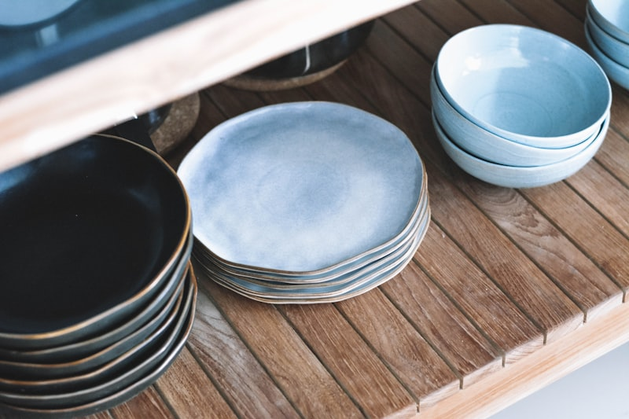

Atelier Notes & Ceramic Trends

Ceramic Journal

How our master potters wash, filter, and age ceramic slip to achieve flawless firing consistency.
Read Journal →
Understanding mineral fluxes, oxide saturation, reduction cooling, and crystal formations.
Read Journal →
How to avoid glaze thermal shock, clean gold leaf trims, and store stacked plates safely.
Read Journal →
Exploring neutral cream palettes, linen tables, ceramic textures, and culinary plating.
Read Journal →
From royal porcelain dynasties to modern custom artisan restaurant commissions.
Read Journal →
How our potters align body posture, balance kickwheel speed, and pull plates thin.
Read Journal →
How panel dimensions and foot ring trimming prevent warpage during vitrification cycles.
Read Journal →
How our glaze master paints liquid gold resin and fires it at low temperatures for luster.
Read Journal →
How to compress shipping bundles, buffer plate stacks, and construct padded wood crates.
Read Journal →
How reducing oxygen inside chambers transforms copper oxide slips to brilliant oxblood red.
Read Journal →
An analysis of grit counts, ball milling, and custom sand additives for rustic tableware.
Read Journal →
How to fold dining sets, select biodegradable paper fillings, and integrate wood crates.
Read Journal →